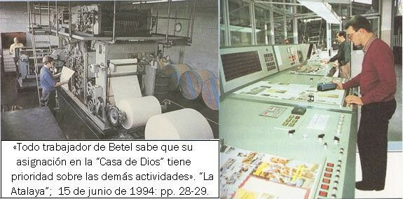

« La sucursal y más ingresos económicos | Índice | Propuestas »
Para la producción de su literatura, la WT emplea jóvenes mayores de 19 años como fuerzas productivas fundamentales para el trabajo físico desgastante (los quieren con secundaria o carrera técnica fundamentalmente), los cuales se encuentran internados y virtualmente aislados del mundo, en conjuntos habitacionales llamados “Betel” (“casa de Dios”).
Estos jóvenes de ambos sexos, producen la literatura en complejos fabriles llamados “Sucursales”, donde se les superexplota con los sistemas Taylor y Ford de producción masiva. Para darse una ligera idea de lo que es una Sucursal y un Conjunto Betel, vea el Videocasete elaborado por la propia Sociedad, llamado “La Organización tras el nombre”, de 1989.
La vida al interior es penosa y agobiante, de tipo “neomonacal” (si la expresión cabe) por un lado, pero militar por otro, aunque aparenten y crean que eso es “un privilegio excepcional” porque así se les hace creer:
“Si te invitan a servir en Betel recuerda por qué vas allá. Si ves algo incorrecto, no te preocupes demasiado. Aunque alguien te trate mal no abandones tu privilegio. Nunca olvides por qué estás en Betel: ¡porque quieres servir a Jehová! Sólo ocúpate en tu asignación y confía en él” 1 (Supuestos consejos de un padre a su hijo).
“Estar resueltos a perseverar donde se nos ponga; hurnildad, sumisión y obediencia a las instrucciones que recibimos de la Sociedad”. 2
«En 1975 dos ancianos de Betel, 3 …escribieron cartas al Cuerpo Gobernante expresando preocupación sobre ciertas condiciones que prevalecían dentro del personal de las oficinas principales, con referencia específica a una atmósfera de temor generada por los que tenían superintendencia, y un sentimiento creciente de desánimo y descontento resultante.
En aquel tiempo cualquier persona que solicitaba servir en las oficinas principales (“servicio de Betel”) tenía que acordar permanecer un mínimo de cuatro años. La mayor parte de los solicitantes eran hombres jóvenes, de 19 a 20 años de edad… A la hora de la comida, a menudo yo le preguntaba a la persona a mi lado, “¿cuánto tiempo llevas aquí?”. En los diez años que yo había dedicado a las oficinas principales nunca oí a siquiera uno de estos jóvenes responder en cifras redondas, “uno y siete”; “dos y cinco”; “tres y uno”; y así por el estilo, siempre dando los años y el número exacto de meses. No podía evitar el pensar que hombres que sirven una sentencia de prisión a menudo siguen una práctica similar de marcar el tiempo.
Generalmente era difícil hacer que estos hombres jóvenes se expresaran acerca de su servicio en las oficinas principales. Como me enteré por amigos que trabajaban más estrechamente con ellos, ellos no estaban dispuestos a decir mucho de manera abierta ya que temían que cualquier cosa que dijeran, que no fuera positiva, podría causar que se les clasificara con lo que popularmente se llamaba un “M.A.”, alguien con “mala actitud”.
Muchos se sentían como “piezas de una máquina”; considerados como trabajadores pero no como personas. La inseguridad en el trabajo resultaba de saber que ellos podrían ser cambiados en cualquier momento a otro trabajo, sin ninguna consideración previa, y a menudo, sin explicación alguna por el cambio hecho. La línea entre “gerencia y empleado” estaba claramente trazada y era cuidadosamente mantenida.
La mesada de catorce dólares [¿al mes? —SEE] que recibían a menudo escasamente cubría (y en algunos casos era menos de) su costo de transportación para ir y venir a reuniones al Salón del Reino al cual estaban asignados. Aquellos que tenían familia o amigos algo pudientes no tenían problemas, ya que recibían ayuda exterior. Pero otros rara vez podían pagar por cosa alguna más allá de sus necesidades básicas. Los que eran de puntos más lejanos, particularmente aquellos de los estados del oeste, podían encontrar virtualmente imposible el pasar vacaciones con sus familias, particularmente si venían de una familia pobre… Ellos veían a los oficiales de la corporación conduciendo automóviles “Oldsmobíle” nuevos comprados por la Sociedad y mantenidos y limpiados por trabajadores como ellos. Su horario de trabajo de ocho horas y cuarenta minutos cada día, y cuatro horas el sábado por la mañana, combinado con la asistencia a las reuniones tres veces a la semana, más la actividad de “testificación” semanal, parecía a muchos que hacía de sus vidas fueran muy apretadas, rutinarias, y agotadoras. Pero sabían que el disminuir en cualquiera de estas áreas indudablemente los pondría en la clase de “M.A.” y resultaría en que se les llamara a una reunión diseñada a corregir su actitud)».
«Como lo declaró el superintendente asistente del hogar Betel, “parece que estamos más preocupados por la producción que por las personas”. El doctor del personal, doctor Dixon, relató que frecuentemente él recibía visitas de parejas casadas angustiadas debido a la inhabilidad de las esposas de aguantar las presiones y mantenerse al día con el horario demandante, con muchas de las mujeres cediendo a las lágrimas al hablar con él». 4
A pesar de que a los “betelitas” se les alimenta (a las máquinas se les tiene que dar mantenimiento) y se les da cobijo (a las herramientas se les tiene que dar almacenamiento), éstos NO COBRAN SALARIO, tan sólo reciben una pequeña “mesada”:
«Russell: “En lo referente a la compensación, estimo prudente mantener el proceder pasado de la Sociedad respecto a los salarios: que nadie reciba paga; tan solo que se cubran los gastos razonables de los que sirvan a la Sociedad o su obra del modo que sea”.
“Los que sirvieran en los hogares Betel, oficinas y fábricas de la Sociedad, así como sus representantes viajantes, recibirán únicamente la comida, el alojamiento y una pequeña cantidad para gastos, lo suficiente para las necesidades inmediatas… Hoy se sigue la misma norma”». 5
También, Russell llegó a decir, que el salario para los explotados betelitas no debería de ser terrenal:
«Nosotros queremos trabajadores (y también los quiere el Señor) que estarán trabajando por un sueldo celestial… ». 6
Los horarios de trabajo en la actualidad en los “hogares” Betel son los siguientes:
«A las 6:30 de la mañana suena un melodioso 7 timbre en todos los edificios de viviendas, aunque muchos de los más de ochocientos trabajadores permanentes [de Alemania] se levanten incluso antes a fin de prepararse para la actividad del día. De lunes a sábado, la familia [“familia Betel”] se reúne en los comedores a las 7:00 de la mañana para el examen del texto diario, o la adoración matutina. A continuación se sirve un nutritivo desayuno. La jornada laboral comienza a las 8:00 y se prolonga por ocho horas, con un descanso para el almuerzo. (Los sábados la familia generalmente trabaja medio día.) En todos los departamentos —la cocina, la imprenta, la lavandería, las oficinas, los talleres o la planta de encuadernación—; hay mucho trabajo que hacer.
Al concluir el trabajo de la tarde y durante el fin de semana, los miembros de la familia asisten a las reuniones de congregaciones vecinas y participan en la predicación pública. Muchos hermanos de Betel sirven de ancianos o siervos ministeriales en dichas congregaciones… Todo trabajador de Betel sabe que su asignación en la “Casa de Dios” tiene prioridad sobre las demás actividades». 8
«Dedican un promedio de por lo menos 44 horas a la semana…, y también trabajan horas extraordinarias cuando es necesario». 9
«La mayor parte son hombres jóvenes. El propósito es mantener un grupo de buenos trabajadores… La casa Betel tiene un administrador de la casa, cuya oficina está en la planta baja debajo de la entrada. Él se encarga de los asuntos generales y detallados de la casa. Cada persona que entra a la casa se presenta al administrador o a su auxiliar y tiene que firmar el registro. El propósito del registro es que la administración conozca quién está en la casa y a qué habitación ha sido asignado y por qué está allí [sic]. Esto es necesario respecto a los convidados y también respecto a los que ocupan las habitaciones permanentemente. El trabajo de la oficina del administrador incluye la compra de alimentos, la preparación de las comidas, el servir las comidas, la limpieza de la casa, y encargarse generalmente de todo el trabajo que se hace allí. Hay un grupo bien organizado de ayudantes que trabajan bajo su dirección. Cada uno, estando dedicado al Señor, sea hermano o hermana, hace su parte con gozo de corazón…
A las ocho de la mañana se espera que todos los miembros de la familia estén desempeñando sus deberes respectivos diligentemente. Algunos operan la lavandería, otros reparan calzado o planchan ropa, otros preparan la comida, otros la cocinan, otros lavan los trastos y atienden al comedor, entre tanto que otros se encargan de la casa. Cada uno desempeña su servicio fielmente según se le ha asignado, haciéndolo como siempre como para el Señor… Todos los que son admitidos a la casa y asignados a un servicio primeramente tienen que llenar un cuestionario declarando que están consagrados realmente al Señor y completamente en armonía con la obra que está desempeñando la Sociedad… Es fácil ver qua nadie puede permanecer en la casa a menos que desempeñe algún servicio.
Al mediodía se dedica una hora para servir el almuerzo y considerar preguntas bíblicas… Se sigue un proceder parecido durante la cena. De hecho, al tiempo de servir cada comida en el comedor hay también tiempo y ocasión para el estudio de la Biblia y se aprovecha ese tiempo…». 10
Son estas las personas que forman parte de los “siervos de tiempo completo”, quienes fabrican y distribuyen las biblias y tratados, así como más de ¡700 millones de revistas al año!, entre “¡Despertad!” y la “Atalaya”. En el mundo, son 16 mil, 468 “betelitas” (Anuario, 1996). En México, en 1988, eran 372, los cuales, en dicho año, llegaban a producir ¡38 mil revistas por hora! y ¡100 mil libros al mes 11! Actualmente yo calculo que son alrededor de 500 “betelitas”. Sin embargo, se está en plena construcción de ampliación para hacer crecer la fábrica más de cuatro veces, así como el complejo habitacional, donde se albergarán a más de 800 “betelitas” 12, que sumados a los 500, alcanzará una cifra de 1300 trabajadores sin sueldo. Dicha ampliación terminará alrededor del año 2000.
El actual (1994) Comité de Sucursal en nuestro país lo conforman: Robert Tracy, Roberto Gama, Carlos Cázares, Santos Estrada, Juan Ángel Hernández y Rodolfo Lozano. De éstos, quien saca la cara (¿prestanombre?) como Director responsable de la publicación de las revistas “Atalaya” y “¡Despertad!”, representando a la “Torre del Vigía”, es Carlos Cázares López, con dirección: Genaro García # 51, Col. Jardín Balbuena, CP 15900, México, D.F. 13
Fuente de las ilustraciones:
Betelitas de varios países en acción. “Los Testigos de Jehová, proclamadores del Reino de Dios”; Watch Tower Bible and Tract Society of Pennsylvania; 1993; Grupo Editorial Ultramar, S.A. de C.V.; p. 587.
Betelitas de varios países en acción. Ibíd.; p. 296.
Bibliografía:
- 1
-
“La Atalaya”; 1° de noviembre de 1991: p. 26.
- 2
-
“La Atalaya”; 15 de junio de 1994: p. 29.
- 3
-
Nos narra Raymond Franz, exmiembro del Cuerpo Gobernante, expulsado en 1980 y sobrino de Frederick Franz, principal dirigente de la Sociedad en esa época.
- 4
-
Franz, Raymond; “Crisis de conciencia”; Editorial CLIE; 1993; pp.77-79.
- 5
-
“Los Testigos de Jehová, proclamadores del Reino de Dios”; Watch Tower Bible and Tract Society of Pennsylvania; 1993; Grupo Editorial Ultramar, S.A. de C.V. p. 351.
- 6
-
“Los Testigos de Jehová en el Propósito Divino”; Watch Tower Bible and Tract Society of New York, Inc.; 1965; p. 29.
- 7
-
Me recuerda la película: “Las dos caras de la moneda”.
- 8
-
“La Atalaya”; 15 de junio de 1994: pp. 28-29.
- 9
-
Franz, Frederick; “Los Testigos de Jehová efectúan unidamente la voluntad de Dios por todo el mundo”; Watch Tower Bible and Tract Society of Pennsylvania; 1971/1991; Grupo Editorial Ultramar, S.A. de C.V.; pp. 19, 25.
- 10
-
“Los Testigos de Jehová en el Propósito Divino”; Watch Tower Bible and Tract Society of New York, Inc.; 1965; pp. 117-118.
- 11
-
Folleto: “Dedicación de Betel”; México; 1989.
- 12
-
“Anuario”; 1995; p. 248.
- 13
-
“La Atalaya”; 15 de septiembre de 1996; p. 2.
“¡Despertad!”; 8 de septiembre de 1996; p. 4.
« La sucursal y más ingresos económicos | Índice | Propuestas »
Comentarios
Comments powered by Disqus